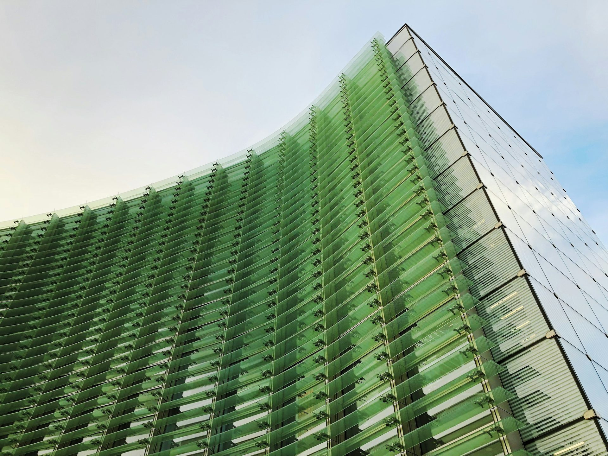

Proyecto 01
Coliseo Multiuso

Diseñamos lo que parecía imposible: estructuras que definen una ciudad y un horizonte entero.
Joe Jibaja Vega proyecta arquitectura de gran escala —coliseos, arenas deportivas, complejos paramétricos y pabellones gastronómicos— con una visualización 3D fotorrealista que permite habitar cada obra antes de construirla. Cada proyecto nace de la geometría, el cálculo y una ambición monumental.
Una secuencia de obras donde la escala se vuelve experiencia. Cada render es una promesa construible: estructura, luz y materia llevadas al límite.
Recorre la obra como si la habitaras: desplázate para atravesar el exterior, el interior, el detalle de fachada y la vista aérea. Cada dato aparece sincronizado con la vista.


Visualización 3D real del complejo deportivo: recorre la estructura, la luz y la escala antes de la primera piedra.
Fragmentos fotorrealistas de los proyectos: interiores, fachadas y espacios de hospitalidad llevados al detalle.


Del concepto a la dirección de obra: una metodología integral para proyectos monumentales, con control técnico y visual en cada etapa.
Cada gran obra empieza con una conversación. Cuéntanos la escala de tu visión y la haremos tangible con un render que podrás recorrer antes de la primera piedra.